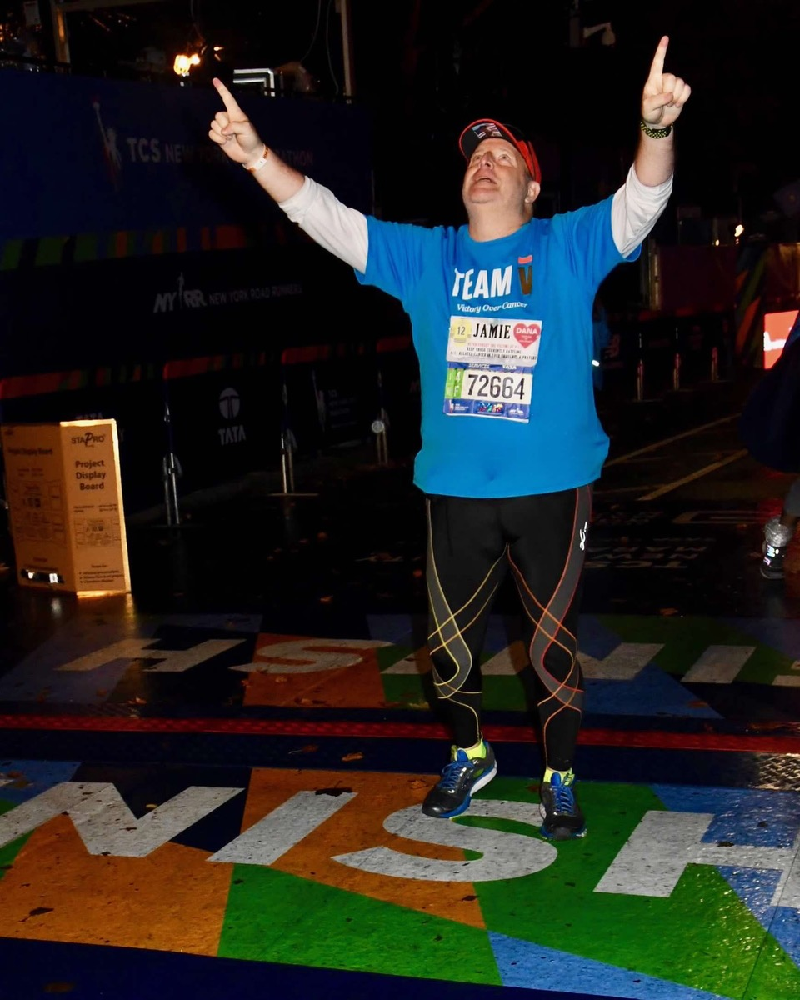

Jamie Lassner
Lead · Act · Move Forward
When everything stops, your next direction begins.
9/11 First Responder. Survivor. Leader. Helping individuals and organizations move forward with clarity, confidence, and decisive action.
To develop leaders and teams who think clearly, act decisively, and move forward with confidence in the moments that define outcomes.
Across corporations, financial institutions, universities, government, and first responder organizations, Jamie equips people to lead when it matters most.
Because progress is not determined by circumstance. It is determined by response.
The obstacle is not the end. It is the moment that demands a stronger way forward.
About Jamie
Jamie Lassner
Keynote Speaker & Global Humanitarian
Experience
9/11 First Responder, World Trade Center
Current Role
Executive, Global Nonprofit serving people with disabilities and older adults
Operating Environments
War zones, large-scale emergencies, crisis response worldwide
NYC Marathon
Finisher, TCS New York City Marathon
Jamie Lassner is a keynote speaker and global humanitarian who helps leaders and organizations perform with precision and lead with purpose. On September 11, he was among the first responders at the World Trade Center, making real-time decisions in one of the most defining crises of our time.
Today, as a global nonprofit executive, Jamie operates in crisis environments worldwide, including war zones and large-scale emergencies. He coordinates life-saving efforts and ensures the most vulnerable are never left behind. His work equips leaders with the mindset and tools to navigate uncertainty and move forward with confidence.
He is deeply committed to developing the next generation of leaders, grounded in the belief that stronger leadership today creates a stronger future for all.
The obstacle is not the end. It is the moment that reveals a stronger way forward.

Forward Movement in Action
Every finish line begins with a single step forward.
Jamie brings to the stage the same commitment he brings to every challenge: the discipline to keep moving when stopping seems easiest, and the clarity to know which direction matters most.
Why Jamie
Real experience.
Real results.
Real leadership.
Not theory. Execution. Performance when it matters most.
- Real-world leadership where outcomes truly mattered
- Crisis-tested experience built through action, not theory
- Proven ability to lead with clarity in high-stakes environments
- Practical frameworks that drive immediate application
- Trusted by organizations where performance is essential
Not theory. Execution. Performance when it matters most.
What You Will Gain
Clarity.
Framework.
Execution.
This is not about motivation. It is about how you think, decide, and lead when it matters most.
When pressure is highest, clarity is rarest. Jamie equips teams with the mental frameworks to cut through noise and focus on what actually moves the situation forward.
Not a theory. A structured approach drawn from real decision-making in real crises, applicable the moment you leave the room.
Practical tools that help leaders maintain focus when circumstances are shifting, stakes are high, and the margin for error is narrow.
The obstacle is information. Jamie teaches leaders to read setbacks as signals and build the discipline to respond rather than react.
The leaders who perform best in crisis are not those who avoid disruption. They are those who have trained themselves to move through it.
Jamie’s Global Audiences
Built for environments where performance defines outcomes.
Jamie partners with leaders and teams operating in environments where alignment, precision, and decisive action are essential.
Navigating complexity, change, and high-stakes decisions where alignment and decisive leadership are essential to performance.
Operating in fast-moving, high-pressure environments where clarity and disciplined decision-making directly affect outcomes.
Developing resilient, disciplined future leaders who can think clearly and act decisively when it matters most.
Leaders making decisions that impact communities, requiring precision, clarity, and the ability to move forward under pressure.
Who must act decisively in critical moments, in environments where Jamie's experience is most directly mirrored.
Where clarity and teamwork directly save lives, and where performance under pressure is not optional.
Seeking a keynote that delivers meaningful, actionable impact. Not inspiration that fades by Monday morning.
Strengthening leadership, coordination, and the capacity to act with purpose in complex and resource-constrained environments.
Across every sector, the common thread is clear: environments where clarity, alignment, and decisive action define outcomes.
Different industries. Same reality. Leadership is revealed in how you choose a stronger way forward.
Book Jamie
Equip your team to think clearly, act decisively, and move forward with confidence.
This is not a keynote people hear. It is one they carry into how they lead.
A real-world crisis-tested leader who teaches people how to act when life hits hardest.